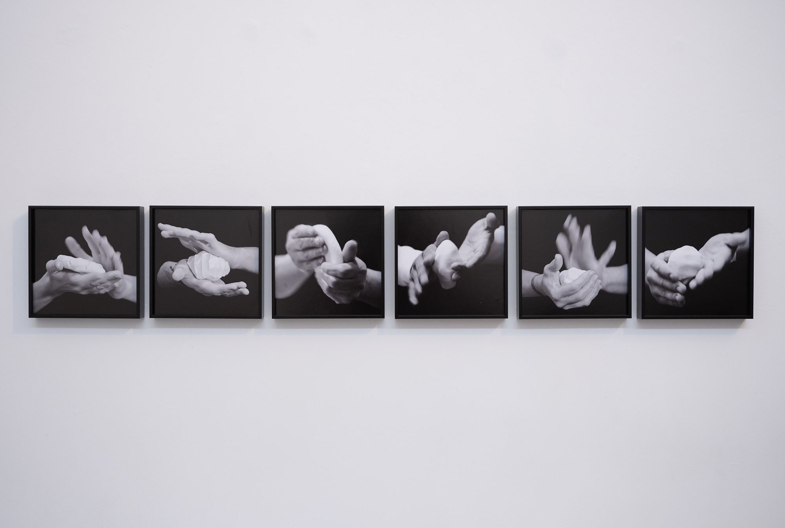

Arepa Viuda (Widow Arepa), 2021-ongoing
Specification of the piece
Glicée prints on fibre rag paper
22 x 22 cm
Video (8:41min)
Description
Arepas are the slices of bread of this Venezuela without bread. This culinary tradition shakes the roots and comforts the Colombian and Venezuelan people living abroad. In its mass, there is no social distinction; the poor and the rich eat this solar disk made out of corn – this sacred cereal of Aztec origin is catalogued as the primary food of the indigenous diet throughout the continent.
The action of making arepas abroad approximates a physical and emotional nostalgia with corn flavour. This genuinely sculptural work of mixing, kneading and shaping this dough reveals the history of an emigrated people, rooted in a tradition (consciously or unconsciously) that goes back to the culinary art of the Caribbean natives.
In recent years the arepa has had a worldwide presence, and its prominent appearance is the result of the colossal emigration of Venezuelans and Colombians. This externalization demonstrates the refugee’s need to remix and shape the alternatives in order to survive abroad, financially and emotionally. This folkloric preparatory process of hand and corn portrays a long-forgotten humanitarian crisis and a symbol of resilience.
Arepa Viuda was awarded and financed by the Finnish Ibero-American Art Institute to show it in Helsinki, Finland at Myymala2 gallery.